Angular
Barra de ferramenta / ícone:

 Menu: Dimensão - Angular
Atalho: D, N
Comandos: dimangular | dn
Menu: Dimensão - Angular
Atalho: D, N
Comandos: dimangular | dn
Descrição:
Cria cotas angulares entre duas linhas de referência.

Procedimento:
- Escolha a primeira linha.
- Escola a segunda linha.
- Defina a posição da cota radial com o mouse ou entrando com as
coordenadas na linha de comando.